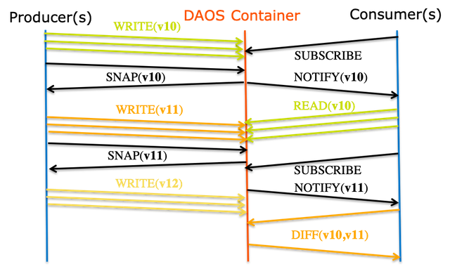

Transaction Model
The DAOS API supports distributed transactions that allow any update operations against objects belonging to the same container to be combined into a single ACID transaction. Distributed consistency is provided via a lockless optimistic concurrency control mechanism based on multi-version timestamp ordering. DAOS transactions are serializable and can be used on an ad-hoc basis for parts of the datasets that need it.
The DAOS versioning mechanism allows creating persistent container snapshots which provide point-in-time distributed consistent views of a container which can be used to build producer-consumer pipeline.
Epoch & Timestamp Ordering
Each DAOS I/O operation is tagged with a timestamp called epoch. An epoch is a 64-bit integer that integrates both logical and physical clocks (see HLC paper). The DAOS API provides helper functions to convert an epoch to traditional POSIX time (i.e., struct timespec, see clock_gettime(3)).
Container Snapshot
As shown in the figure below, the content of a container can be snapshot at any time.

DAOS snapshots are very lightweight and are tagged with the epoch associated with the time when the snapshot was created. Once successfully created, a snapshot remains readable until it is explicitly destroyed. The content of a container can be rolled back to a particular snapshot.
The container snapshot feature allows supporting native producer/consumer pipeline as represented in the diagram below.

The producer will generate a snapshot once a consistent version of the dataset has been successfully written. The consumer applications may subscribe to container snapshot events so that new updates can be processed as the producer commits them. The immutability of the snapshots guarantees that the consumer sees consistent data, even while the producer continues with new updates. Both the producer and consumer indeed operate on different versions of the container and do not need any serialization. Once the producer generates a new version of the dataset, the consumer may query the differences between the two snapshots and process only the incremental changes.
Distributed Transactions
Unlike POSIX, the DAOS API does not impose any worst-case concurrency control mechanism to address conflicting I/O operations. Instead, individual I/O operations are tagged with a different epoch and applied in epoch order, regardless of execution order. This baseline model delivers the maximum scalability and performance to data models and applications that do not generate conflicting I/O workload. Typical examples are collective MPI-IO operations, POSIX file read/write or HDF5 dataset read/write.
For parts of the data model that require conflict serialization, DAOS provides distributed serializable transaction based on multi-version concurrency control. Transactions are typically needed when different user process can overwrite the value associated with a dkey/akey pair. Examples are a SQL database over DAOS or a consistent POSIX namespace accessed concurrently by uncoordinated clients. All I/O operations (include reads) submitted in the context of the same operation will use the same epoch. The DAOS transaction mechanism automatically detects the traditional read/write, write/read and write/write conflicts and aborts one of the conflicting transactions that have to be restarted by the user (i.e., transaction fails to commit with -DER_RESTART).
In the initial implementation, the transaction API has the following limitations that will be addressed in future DAOS versions:
- no support for the array API
- transactional object update and key-value put operations are not visible via object fetch/list and key-value get/list operations executed in the context of the same transaction.